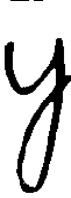

Generating Handwriting
Presently, the basis for generating handwriting in HandWriter is restrictively static and it is highly desirable that future releases generalize this procedure by automating the extraction of letter images of a person's handwriting (perhaps with the use of machine learning).
This section elucidates the steps that were taken to manually feed a handwriting sample to the application, to guide the automation of these steps in the future.
Data Gathering and Serialization
A sample of handwriting was obtained with constraints imposed -
- Multiple instances of each letter and symbol were written in a fixed grid.
- Each cell within a grid was divided into 3 parts vertically in the ratio of 1:1:2, and letters were written accordingly. This can be seen in the difference between the letters ‘a’, 'd’, and ‘y’.
 - Letters were extracted from the grid using opencv, and the data was processed and cleaned.
- Finally the matrix representation of each image was stored in a hashtable that maps an instance of a character to its image. Each letter has five instances (such as 'a1.jpg' .. 'a5.jpg'). The key of hashtable is like 'a1.jpg' (that is, the name of the image file), and its value is the 8-bit integer matrix representation of the corresponding image. There is only one whitespace stored as 'whitespace.jpg'. Symbols are stored like '(1.jpg', '(2.jpg' .. '(5.jpg'
- Inverted and double inverted commas are stored as 'inv1.jpg' .. 'inv5.jpg' and 'dinv1.jpg' to 'dinv5.jpg' respectively. Further there is some special consideration given in
LineParserwhen these symbols are converted, because there are actually 3 characters each that can represent these symbols. - This hashtable was serialized with pickle and exported as ‘hashes.pickle’
Adding a new handwriting
Due to the architecture of handwriter, changing or adding a new handwriting is simply a matter of changing the underlying hashes.pickle with images of the new handwriting. Store this new pickled hashtable file in src/main/resources and change the hashes path variable in ParserThread object in main.py. It is important that the new hashes file has keys formatted exactly as outlined above, as the LineParser class expects this.